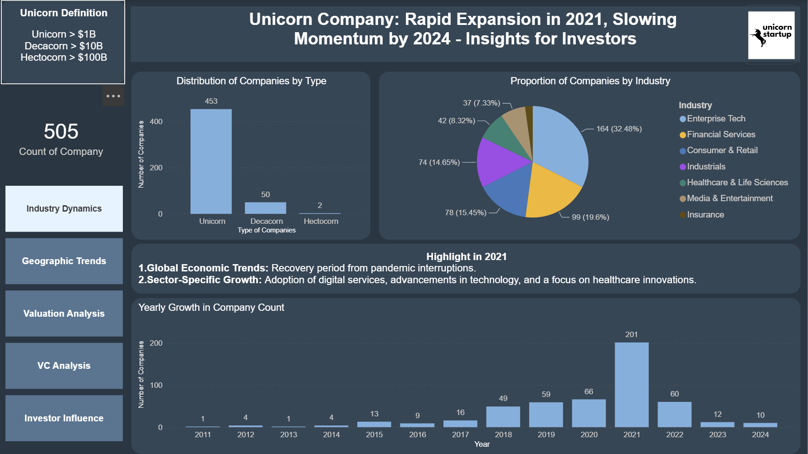

Prepare Dataset
Cleaned and structured unicorn startup data for dashboard exploration and R-based analysis.
Power BI · R · Dashboard Design · Association Rules · Clustering
An interactive Power BI dashboard supported by R-based association rule mining and clustering to explore unicorn startup valuation, funding, investor networks, country patterns, and industry relationships.
This project explored unicorn startup investment and valuation patterns through an interactive Power BI dashboard, supported by R-based analytical techniques. The Power BI dashboard was designed to let users dynamically explore startup characteristics, investor patterns, valuation, funding, country, and industry relationships. R was used to extend the analysis beyond dashboard filtering by applying association rule mining to investor relationships and k-means clustering to valuation and funding patterns.
The screenshot below shows the dashboard landing page. The full interactive .pbix file is available for download.
The Power BI dashboard was designed as an interactive exploration tool. Users can filter and click through startup, investor, valuation, country, and industry views to understand patterns within the unicorn ecosystem.

The workflow combined interactive dashboard design with R-based analytical techniques to move beyond descriptive filtering and identify deeper investment and valuation patterns.
Cleaned and structured unicorn startup data for dashboard exploration and R-based analysis.
Designed interactive views for valuation, funding, industry, country, and investor exploration.
Used Apriori association learning in R to identify frequent investor combinations and co-investor relationships.
Applied k-means clustering using valuation and VC raised to date to segment unicorn startups.
Used silhouette scores to compare cluster numbers and support the choice of segmentation structure.
Connected R outputs with dashboard interpretation to explain investor patterns and startup segments.
Association analysis identified frequent investors, including Accel, Andreessen Horowitz, and Sequoia Capital, highlighting their strong presence in the dataset.
Apriori rules highlighted co-investor relationships, including high-lift niche partnerships such as Founders Fund and Khosla Ventures.
K-means clustering separated startups into a large mainstream group, a smaller high-funding group, and a small outlier group with extremely high valuations.
Power BI supported dynamic exploration, while R added association learning and clustering to uncover deeper investor and valuation patterns.
The webpage summarises the project for a business analytics audience. The interactive Power BI dashboard and R analysis code are available as supporting materials.